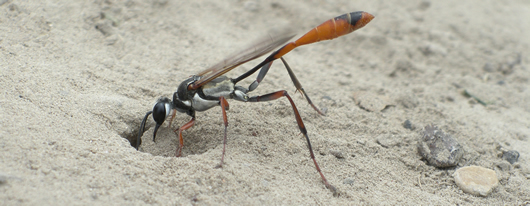
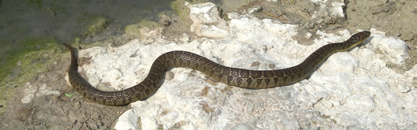
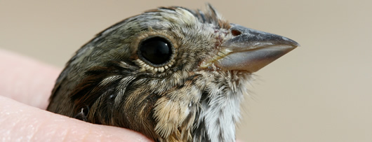

Fish
 Fish checklists for the Colorado River basin are availavle at
Texas Freshwater Fishes
and
Fishes of Texas.
Fish checklists for the Colorado River basin are availavle at
Texas Freshwater Fishes
and
Fishes of Texas.
Other links and information:
Aquatic and Terrestrial Invertebrates

A complete list of the aquatic invertebrates of Texas has been compiled by Stephen W. Ziser and can be obtained
here
.
- Common Texas insects
- Texas Mussel Group
- Checklist of Texas Butterflies
- OdonataCentral checklist of dragonflies and damselflies
- Texas Entomology
Other links and information:
- Visual Taxonomy (aquatic invertebrates)
- The Aquatic Invertebrates of Texas
- A field guide to common Texas invertebrates
- List of butterflies of Texas
- Texas dragonfly information
- Learn about Texas insects
- A Bibliography of Texas Aquatic Invertebrate Ecology and Taxonomy
- Freshwater mussels of Texas ( book)
- Preliminary checklist of the orthopteroid insects (Blattodea, Mantodea, Phasmatodea,Orthoptera) of Texas
Snakes, lizards, turtles, salamanders, frogs and toads, and crocodilians
 A list of lizards, turtles, snakes, salamanders, frogs and toads, and crocodilians for Texas can be found at Herps of Texas . Other herp links for Texas (compiled by Herps of Texas).
Birds

Birds of the Edwards Plateau: a field checklist
Other links and information:
Mammals
Plants
TPWD Texas plant information database
Other links and information:
- Common plant species of the Edwards Plateau
- Common plants of riparian areas - central and southwest Texas
- Image archive of central Texas plants
- Native plants of south Texas
- Native plants of Texas
- Benny Simpson's Texas native trees
- Benny Simpson's Texas native shrubs
- Lady Bird Johnson Wildflower Center
- Native Plant Society of Texas